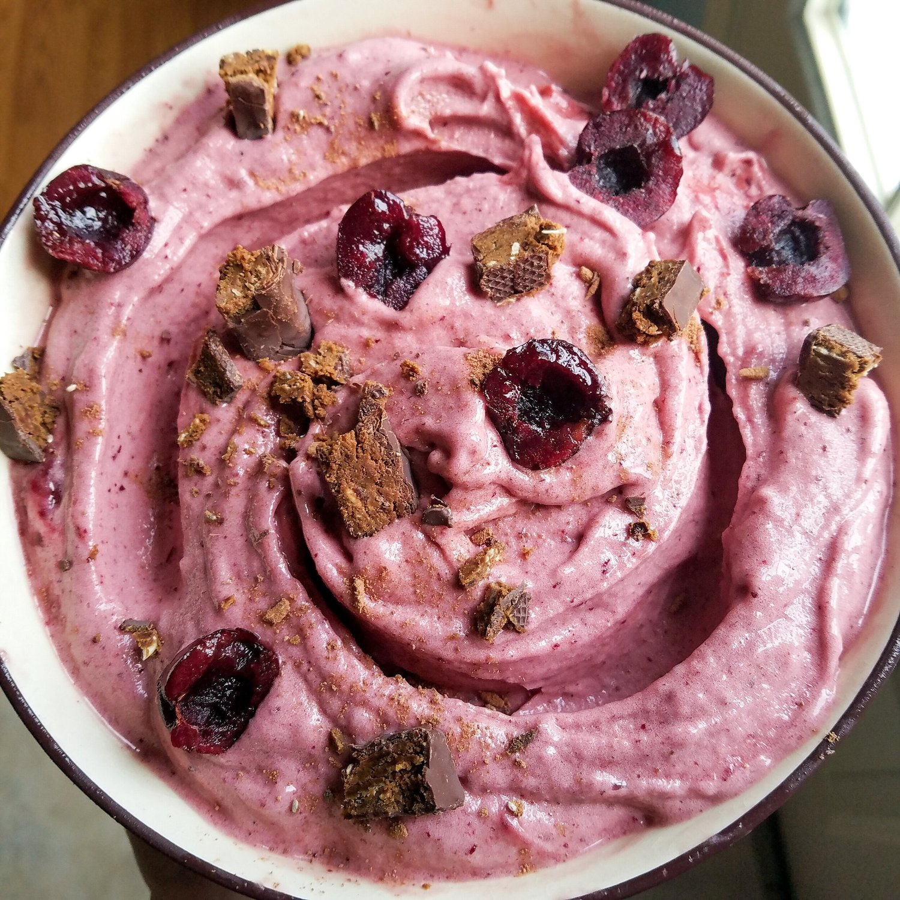
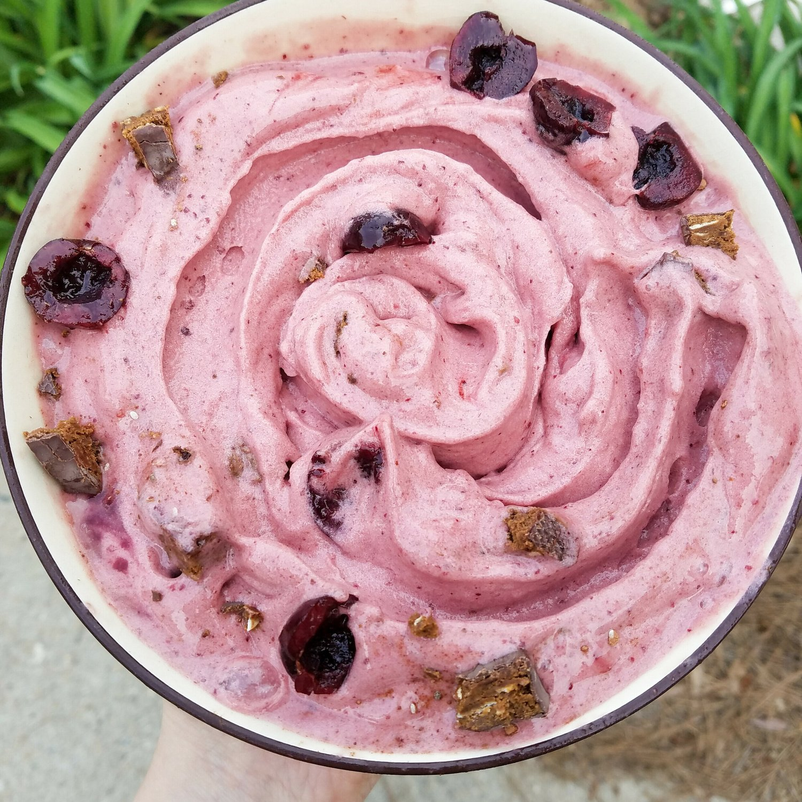

Cherry Garcia Banana Ice Cream (vegan, gluten free)


Vegan, gluten free, nut free, low fat Cherry Garcia Banana Ice Cream?! It exists. This is a thing in the world that does indeed, beautifully exist. A sweet, cherry base with more cherries and chocolate bits swirled in with every bite - say no more because this is heaven.
Ever just want to face plant in a seemingly endless bowl of ice cream? Yeah, me too. Every day. Thankfully, things like banana ice cream exist to bring that dream to life without my writhing in pain after I eat it. Wooo!
Banana ice cream and I started off with a rough relationship. A very rough relationship. The year was 2012. Scene: Me, in my dorm room - the kitchen of the dorm to be exact, $20 Oster brand blender on my kitchen counter (the cheapest at Brandsmart).
Me: "I'm going to try the banana ice cream recipe I keep seeing on social media!"
*Kim places a frozen banana in the $20 Oster brand blender (the cheapest at Brandsmart)*
Me: (speaking to roommate) "This won't blend!"
*Kim continuously bangs and blends and mashes and blends and stirs*
Me: "Heyyy I think it's blending!"
*Kim pours blended mixture into bowl, realizing that the only reason it eventually blended after many many minutes of struggle was because THE FROZEN BANANA MELTED ENTIRELY*
*Kim sits with melty, soupy banana "ice cream" in solitary sadness, not touching banana ice cream for 2 full years*
Yeah so it didn't go so well. For brevity's sake, I will speed up the relationship timeline. About a year and a half ago I tried banana ice cream again. Again, with a cheap blender since I didn't have a vitamix or other fancy blender. But I tried being rapid this time so it wouldn't melt! Regardless, I could never get mine to be as thick as Instagram pictures seem to be. It was extremely frustrating; you know how I love thick shakes & thickthickthick texture anything. I wanted thick! I tried and tried and couldn't do it, and gave it up again for a bit.
Then middle of last year, I don't remember where I saw it, but someone used a food processor to blend their frozen bananas. And I thought...hey I have one of those! - a $20 Oster brand food processor (the cheapest at Brandsmart - I think you see the trend). So I tried it with a food processor...AND MAGIC HAPPENED. It was so thick and perfect!
And it's been love ever since. Especially since goinng vegan. I just love the thickness of banana ice cream. It's like a completely different taste & food than bananas. I don't know how that works, but it does. Science.
This cherry Garcia banana ice cream is a very easy, whole foods alternative to high fat, refined sugar-packed products on the shelves. It's so satisfying and makes you feel like a fancy ice cream artist. Move over, Ben. And Jerry. Kim's the next greatest artist.
Try this banana ice cream recipe out, seriously. So many of ya'll tell me on Instagram that you've never tried it yet, but you're missing out!! Tell me when your world's been rocked. :)
Cherry Garcia Banana Ice Cream
-
4 frozen bananas
-
1 cup frozen cherries
-
chocolate chips!
-
Add your peeled, frozen bananas and frozen cherries to a food processor (or fast high powered blender like vitamix).
-
Blend at high speed! Once or twice be sure to scrape down the sides for any loose pieces so they're included! At first it all blends to small bits and seems choppy, but after a few more seconds it will smooth out into a thick consistency.
-
Once blended evenly, use a spatula to scrape the ice cream out of the processor into a bowl. Mix in chocolate chips or, like I did, a chocolate cherry Square Bars! The square bars were perfect. I also added unsweetened cocoa powder on mine.